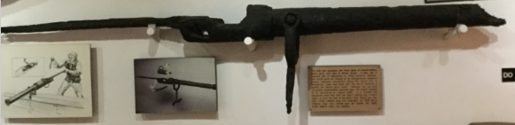
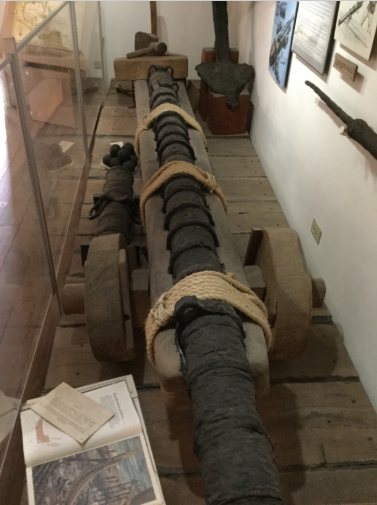
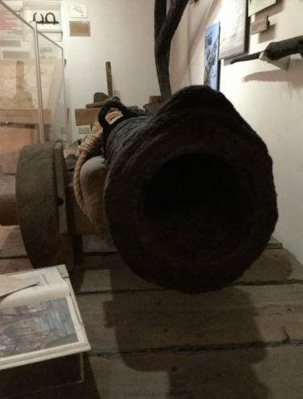

Swivel Gun

Swivel gun is one of the smallest types of cannons.
They were much lighter than normal cannons, so they could be quickly mounted or dismounted on the deck of a pirate ship.
Their main purpose was to kill people on deck and repell attackers trying to board. They were not meant to sink ships.
As this weapon was mounted on a swivel, they had great mobility; however, their accuracy was low so the enemy had to be in very close range.
Carronade

Carronade's were short-range cannons that could deliver a large amount of damage.
These cannons were mostly used for destroying ships with heavy cannonballs.
